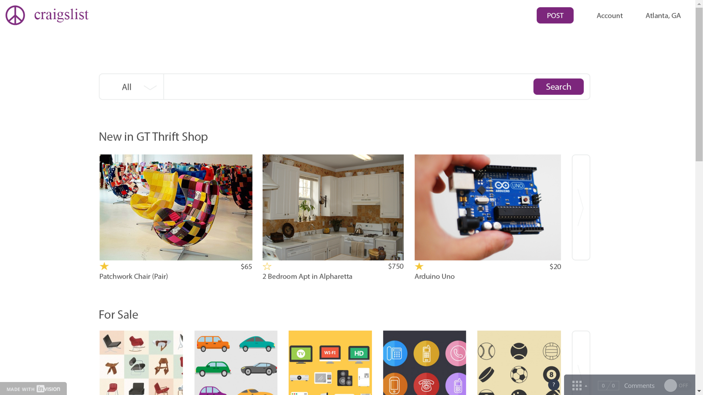

Craigslist is a popular online classifieds platform. It allows users to post their ads have buyers contact them through email or phone. My task was to redesign craigslist to position it as a classified ads platform for students. This was a 5 hour design challenge.
Since the task was to redesign the page for students, my first thought was to question why. Why should we target students with this design? Therefore, I started with a study of the demographics of website. Users of Craigslist are most likely to fall in the age group of 18 to 45[1]. However, Users of the age group 25 to 45 are more likely to use Craigslist than people belonging to the age group 18 - 25 (essentially college students). Why is this? As a student myself, I was aware that that students regularly buy and sell used items. There was another reason for this lower usage of craigslist. Therefore, this was a research question I wanted answered.
The next task was to identify the most popular items that were traded on craigslist. Most commonly craigslist is used for the sale and purchase of vehicles and furniture followed by electronics.[2] I needed to identify if the same categories were popilar among students. This was my second research question.
My third task was to identify where and how people access craigslist. This was in order to determine if a mobile platform or a web platform would target more users.
In order to answer each of these questions, I needed to do a competitive analysis. I tried to find the most common ad platforms that students used. I then sent out a survey to students at Georgia Tech addressing each of these research questions.
I received 18 responses from students and a striking similarity in responses. 15/18 students prefered Facebook groups to trade. The most recent trades were most commonly electronics followed by furniture. Some of the keywords used for students' preference of Facebook groups were "Trust"
"Community""Know People"
"Convenient""Organized"
An equal number of responses indicated preference for mobile and web platforms.
"I know the people I am dealing with on GT thrift shop have been vetted in a way because they are part of the GT community"
"I like a face to a creepy ad"
"Thrift shop. Student group makes me feel safer."
Trust is an important factor that is considered by students when purchasing items from a classified ad. By using Facebook groups there are several features of Facebook that contribute to that sense of trust:
"it's easy to find out the information and interesting classified ads without installing a new platform to use"
"I already am members of several groups on Facebook. It's very convenient and more organized than Craigslist."
Facebook is more organized. It also allows users to buy and sell items without having to switch to another app or platform. However, students still use craigslist at times. This is obviously because Facebook groups are lacking in some way. After further research online I found that this was due to quantity. There are more postings on craigslist therefore, if students don’t find what they are looking for on Facebook they switch to craigslist.
Based on the above design ideas, I decided to introduce the concept of Craigslist Communities: curated groups of users that can buy and sell items amongst themselves. People could join these groups by signing into Craigslist using their Facebook profiles allowing access to a small amount of profile information that other users in the group can access. This information will not be available to the general public of Craigslist therefore maintaining the same level of anonymity as Craigslist currently does. Communities can be formed by students belonging to the same university or some real world group. For example, Travel enthusiasts belonging to Georgia Tech can create a group called GT Travel Club in order to buy and sell used gear or vehicles. The concept of communities adds a level of trust and also provides a face to the seller. The buyer feels more secure about buying from people he feels he can trust. If the buyer can not find something that he's looking for in the communities he belongs to, he doesn't have to switch platforms to search for publicly posted ads. He can just continue to use Craigslist.
I sketched a few screens to represent this new face of craigslist by also redesigning the elements of the page to make it look more organized. From a interaction design perspective the current craigslist page has too much text and by replacing them with appropriate images, users would be able to get to their target page much faster. I was able to incorporate a combination of "relevant posts" and "new posts" to be displayed on the home page by taking inspiration from the current way Facebook groups display posts in a timeline.
I built a prototype using Photoshop and Invision. I decided to go with a Web based platform since a slightly higher number of students responded with a preference for a larger form factor (And of course keeping in mind that it was a 5 hour challenge). However, ideally both mobile and desktop form factors have to be addressed. I tried to keep the look and feel of Craigslist the same as the current page. While evaluating different sketches for the organization of the posts, I decided to go with a 2 column format similar to the current Craigslist website for regular users of the website.
The task was to position Craigslist as a classifieds ad platform for students. By performing research on Craigslist, I was able to determine that I would have to redesign Crraigslist in such a way that I would be able to not just keep the current users hooked but also attract more users: Students. Therefore, by performing competitive analysis I was able to offer students the elements that Facebook Groups has on Craigslist, making it the best overall ad platform.
If given more time, during the research phase I would have liked to perform more research into when and where users look at classified ads. Even though I received responses addressing this during the survey, this was still self reported data. Therefore, the responses indicated their preferences. However, the actual data can be different. An ethnographic study (contextual inquiry) would give more accurate information to understand when people view the website: for example, while on the way to class in the bus. I would have also liked to understand the trends of the type of items bought and sold on craigslist. As a student myself, I believe students tend to buy and sell furniture during move in/move out periods: essentially around the start of a semester.
During the design phase I would have better evaluated the new organization of information as it is a big change from the existing system. I would have first performed user testing using a paper prototype to evaluate if the new architecture of the website is faster before moving to the design of the visual elements of the page. I would have also liked to evaluate if having a Messenger system like Facebook would be useful on craigslist therefore directly connecting the buyer and seller without having them switch platforms.